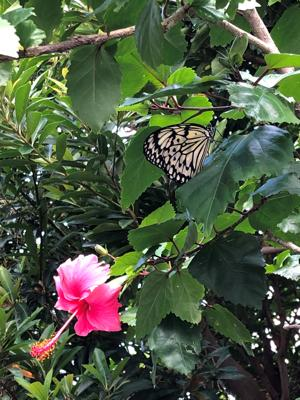

うるがいの話 ある日
最新: アルコール消毒
うるがいとは 前提知識です
カニの画像をクリックすると『うるがいの話』サイトを表示します
うるがい(ｳﾙｶﾞｲ urugai)とは、『もずくがに』の名前でとても大きくなります。
たながー（ﾀﾅｶﾞｰtanagaa）とは手長えびのことで、何種類かあり大きいのは車 エビぐらいになります。
ぶながー(bunagaa)とは、赤い髪の毛、赤い身体、そして身長は１ｍ２０ｃｍ ぐらい、川の蟹を食べているの目撃された。場所は沖縄県国頭郡大宜味村のと ある村僕の隣近所に住んでいる爺さんから、聞いた話です。
2021年09月18日 (土）
アルコール消毒
16:40

ヨメが新聞広告で、久米仙酒造がアルコール消毒用がネットから購入できる分
かり、ネットを調べたが一万未満だと送料千円百円が無料だが、一万以上はさ
すがに多すぎるのではひたすら悩んでいる。暫くすると、
『【送料無料】消毒
用エタノール67度 500ml まとめ買い6本セット』
とネットにあるのでコレ
がいい！と喜ぶ。暫くすると、ネットの注文ではメールアドレスとか個人情報
を入力しなければいけない、嫌だな（個人情報には過度に反応する人）、電話
で注文できるか、確認してみたらというと、暫くして今日の５時半までに事業
所まで取りに来てくれたらいいですよ、ということに。で、那覇市仲井真の久
米仙酒造の事業所まで取りに行く。そこは、直接販売する所ではなく業者等と
営業する場所だった。コロナ禍でお酒の販売は良くないから、こんな変な客も
対応するのだろうと事業所の人達の微妙な空気を感じながら、荷物の梱包と清
算をすること１５分程で事業所を後にする。ネットだと後で、支払い方法が面
倒くさいとの理由らしいが・・・・（理解できない！）。ちなみ、酒造のアル
コール消毒は、他の薬局等の消毒液と比べ、手にいいとのこと。酒造所も儲け
がないとの話らしい、あと暫くすると販売が無くなるはずとヨメは言っている